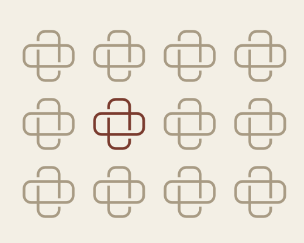

01Design system Систем
01One system before many screens
Components, colours, type and every state defined once, so every screen stays consistent and the next feature is quick to build.
NetPay — 50+ components, light and dark. See the system